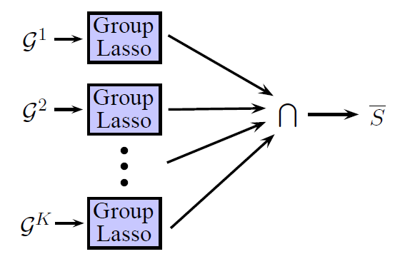

High-Dimensional Screening Using Multiple Grouping of Variables
Divyanshu Vats

Abstract
Screening is the problem of finding a superset of the set of non-zero entries in an unknown p-dimensional vector b given n noisy observations. Naturally, we want this superset to be as small as possible. We propose a novel framework for screening, which we refer to as Multiple Grouping (MuG), that groups variables, performs variable selection over the groups, and repeats this process multiple number of times to estimate a sequence of sets that contains the non-zero entries in b. Screening is done by taking an intersection of all these estimated sets. The MuG framework can be used in conjunction with any group based variable selection algorithm.
In the high-dimensional setting, where $p \gg n$, we show that when MuG is used with the group Lasso estimator, screening can be consistently performed without using any tuning parameter. Our numerical simulations clearly show the merits of using the MuG framework in practice.
Brief Description
-
Main Idea: As shown in the figure, the Multiple Grouping (MuG) framework groups variables, performs variable selection over the groups (group Lasso is one of many algorithms we can use), and then takes an intersection over all the estimated supports to perform screening.
-
Parameter-Free Screening: For the sparse linear regression problem, we show that screening using MuG can be done without using any tuning parameter. We use properties of the Lasso and the group Lasso to achieve parameter-free screening.
Preprint
[
arxiv]
Code
Will be released soon.
Contact
dvats AT ima DOT umn DOT edu